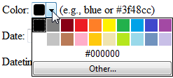

3.2.1 Controles de entrada de datos en HTML5
HTML5 introduce varios tipos de controles de entrada input que mejoran la experiencia del usuario al completar formularios y facilitan la validación de datos del lado del cliente sin depender exclusivamente de Javascript.

Figura 3.5: Tabla comparativa de los nuevos tipos de input en HTML5
| Tipo de Input | Descripción | Uso principal |
|---|---|---|
email |
Campo para dirección de correo | Validación sintáctica de email |
number |
Control numérico con botones de incremento | Entrada de valores enteros/decimales |
range |
Barra deslizante para un rango de valores | Selección imprecisa o estimaciones |
color |
Selector de color de paleta gráfica | Selección de código hexadecimal de color |
Entre los nuevos controles se incluyen opciones especializadas para correo electrónico, direcciones URL, números, rangos, fechas, horas y selectores de color.